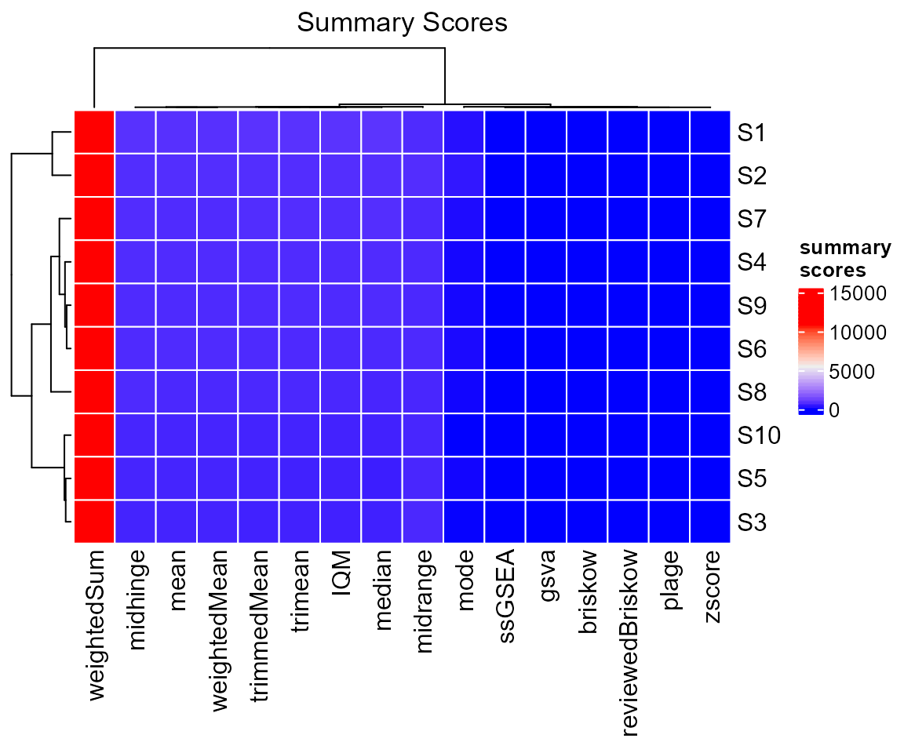
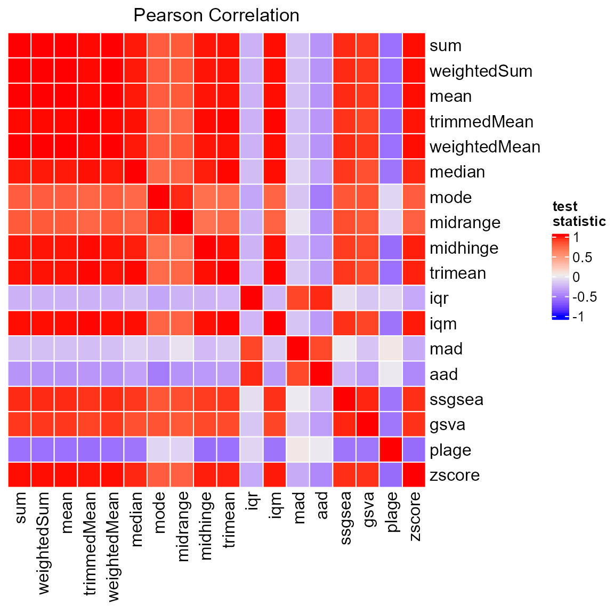

Introduction
sigscores is an helpful package providing an easy way to compute summary scores for gene signatures.
There is one main function ?computeSigScores, that can
be used to compute all the available scores. The scores can be selected
via summary score ids (scores argument) or scorers
(scorers argument).
Seed
Now we want to set a seed for the random number generation (RNG). In
fact, different R sessions have different seeds created from current
time and process ID by default, and consequently different simulation
results. By fixing a seed we ensure we will be able to reproduce the
results of this vignette. We can specify a seed by calling
?set.seed.
#Set a seed for RNG
set.seed(
#A seed
seed = 5381L, #a randomly chosen integer value
#The kind of RNG to use
kind = "Mersenne-Twister", #we make explicit the current R default value
#The kind of Normal generation
normal.kind = "Inversion" #we make explicit the current R default value
)Data
We create now some simulated data to use. For this vignette, we will consider a matrix with 100 genes and 10 samples.
#number of samples
nc = 10
#number of genes
nr = 100
#create matrix
x = matrix(
data = sample(x = nr*nc),
nrow = nr,
ncol = nc,
dimnames = list(
paste0("g",seq_len(nr)),
paste0("S",seq_len(nc))
)
)We can inspect the data by using the ?head function,
which returns the first parts of a vector, matrix, table, data frame or
function. Let’s print the first 6 rows of our matrix.
#print
head(x = x, n = 6L)
#> S1 S2 S3 S4 S5 S6 S7 S8 S9 S10
#> g1 993 702 660 854 769 859 940 679 946 218
#> g2 585 620 941 714 994 369 602 506 981 674
#> g3 175 779 984 834 460 292 445 953 491 673
#> g4 778 855 293 140 29 601 980 82 161 115
#> g5 876 32 838 22 803 804 355 663 11 731
#> g6 835 462 894 560 885 88 442 199 541 725We can now define our gene signature. For example, we can randomly select some genes from the matrix. Let’s select 20 genes.
Data Transformation
We may want to compute some of the scores on transformed data. Users
can obviously directly provide the data to work on as
x.
However, to facilitate this task, sigscores provides 2
built-in data transformation functions. A list of currently supported
data transformers is available through the
?getAvailableDataTransformers function call.
#list transformers
data.transformers = getAvailableDataTransformers()
#print in table
knitr::kable(x = data.transformers)| id | name | |
|---|---|---|
| stepFunction | stepFunction | Step Function |
| quantile | quantile | Quantile Normalization |
We can extract the ids by selecting the id column.
#transformer ids
data.transformers.ids = data.transformers$id
#print
print(data.transformers.ids)
#> [1] "stepFunction" "quantile"The data transformation function can be obtained through the
?getDataTransformer function call. For example, let’s
select a step function as data transformer.
#transformer
data.transformer = getDataTransformer(f = 'stepFunction')
#function
data.transformer
#> function(
#> x,
#> y = c(-1,0,1),
#> thr = NULL,
#> method = c("median", "mean", "mode", "midrange", "trimean", "iqm", "iqr", "mad"),
#> by = c("rows", "cols"),
#> na.rm = TRUE
#> ){
#>
#> UseMethod("stepFunctionTranformation", x)
#> }
#> <bytecode: 0x000000001641da18>
#> <environment: namespace:sigscores>Looking at the documentation of ?getDataTransformer we
can see the function for computing the step function is called
?stepFunctionTranformation, which accepts different
arguments. In particular, method indicates the score to be
used as threshold in the step function, and by indicates
whether to compute the threshold by applying method to rows
or columns of x.
We can then use the transformer to create a new data set to be used for the computation of the scores.
#transform data
newx = do.call(
what = data.transformer,
args = list(x = x, method = 'median', by = 'rows')
)
#print
head(x = newx, n = 6L)
#> S1 S2 S3 S4 S5 S6 S7 S8 S9 S10
#> g1 1 -1 -1 1 -1 1 1 -1 1 -1
#> g2 -1 -1 1 1 1 -1 -1 -1 1 1
#> g3 -1 1 1 1 -1 -1 -1 1 -1 1
#> g4 1 1 1 -1 -1 1 1 -1 -1 -1
#> g5 1 -1 1 -1 1 1 -1 -1 -1 1
#> g6 1 -1 1 1 1 -1 -1 -1 -1 1Summary Scores
A list of currently supported scores is available through the
?getAvailableScores function call, which returns a table
with two columns:
-
id: the id of the summary score, to be used in the function calls -
name: the name of the summary score
#list summary scores
summary.scores = getAvailableScores()
#print in table
knitr::kable(x = summary.scores)| id | name | |
|---|---|---|
| sum | sum | Sum |
| weightedSum | weightedSum | Weighted Sum |
| mean | mean | Arithmetic Mean |
| trimmedMean | trimmedMean | Trimmed Mean |
| weightedMean | weightedMean | Weighted Mean |
| median | median | Median |
| mode | mode | Mode |
| midrange | midrange | Midrange |
| midhinge | midhinge | Midhinge |
| trimean | trimean | Trimean |
| iqr | iqr | Interquartile Range |
| iqm | iqm | Interquartile Mean |
| mad | mad | Median Absolute Deviation |
| aad | aad | Average Absolute Deviation |
| ssgsea | ssgsea | Single Sample Gene Set Enrichment Analysis |
| gsva | gsva | Gene Set Variation Analysis |
| plage | plage | Pathway Level Analysis of Gene Expression |
| zscore | zscore | Z-Score |
As we previously wrote, ?computeSigScores accepts in
input summary score ids or scorers.
Score IDs
We can extract the ids by selecting the id column in the
previous table.
#summary score ids
summary.scores.ids = summary.scores$id
#print
print(summary.scores.ids)
#> [1] "sum" "weightedSum" "mean" "trimmedMean" "weightedMean"
#> [6] "median" "mode" "midrange" "midhinge" "trimean"
#> [11] "iqr" "iqm" "mad" "aad" "ssgsea"
#> [16] "gsva" "plage" "zscore"Internally, the score ids are used to create scorers, that will be used for the computation of the scores.
Scorers
Under the hood, sigscores uses scorers, i.e. functions
that compute the summary scores. All scorers in sigscores
share some common parameters:
-
x: a (named) numerical vector or matrix -
i: a signature -
na.rm: a logical value, indicating whether to removeNAvalues before the computation of the score -
...: further parameters to the specific scoring function -
transform.fun: it is used to provide a transformation function -
transform.args: a list containing the parameters fortransform.fun -
transform.sub: a logical value indicating whether to transformxafter it is subset for the signaturei(used to speedup computation, as transformation function should take less time on a reduced data set)
The option of providing a data transformer to a scorer is given to facilitate the application of specific transformation functions to a selected summary measure via an automated process.
We can retrieve a scorer by providing a single score id to the
function ?getScorer or multiple ids to
?getScorers. For example, let’s get the scorer for a
weighted sum. We know the related score id
(i.e. weightedSum) from the table obtained through the
?getAvailableScores function call, so to obtain the scorer
we can do:
#get one scorer
scorer = getScorer(score = "weightedSum")
#see function
scorer
#> function(
#> x,
#> i = NULL,
#> w = NULL,
#> na.rm = TRUE,
#> transform.fun = NULL,
#> transform.args = list(),
#> transform.sub = F,
#> ...
#> ){
#> return(
#> genericScorer(
#> score = "weightedSum" ,
#> x = x,
#> i = i,
#> w = w,
#> na.rm = na.rm,
#> transform.fun = transform.fun,
#> transform.args = transform.args,
#> transform.sub = transform.sub,
#> ...)
#> )
#> }
#> <bytecode: 0x0000000008247ee8>
#> <environment: namespace:sigscores>Compute the Scores
Finally, we can compute our summary scores.
Using scores
The easiest way for doing so is by passing the score ids to the
function via the scores argument. Internally, a scoring
function is retrieved for each provided score id by calling
?getScorers.
#compute summary scores
scores = sigscores::computeSigScores(
x = x,
i = signature,
na.rm = T,
scores = summary.scores.ids
)
#print
head(scores)
#> sampleID sum weightedSum mean trimmedMean weightedMean median mode
#> S1 S1 13331 13331 666.55 666.55 666.55 736.5 137
#> S2 S2 12280 12280 614.00 614.00 614.00 623.0 233
#> S3 S3 8242 8242 412.10 412.10 412.10 366.5 13
#> S4 S4 11360 11360 568.00 568.00 568.00 562.0 53
#> S5 S5 8580 8580 429.00 429.00 429.00 323.0 43
#> S6 S6 11137 11137 556.85 556.85 556.85 519.0 77
#> midrange midhinge trimean iqr iqm mad aad ssgsea
#> S1 557.0 680.375 708.4375 303.25 720.0 180.8772 178.65 0.89773866
#> S2 610.0 594.125 608.5625 389.25 619.3 322.4655 202.80 0.87143168
#> S3 499.0 409.750 388.1250 438.50 373.1 376.5804 242.20 -0.06961626
#> S4 521.5 574.500 568.2500 532.50 567.1 401.7846 271.30 0.71651992
#> S5 478.0 437.500 380.2500 503.50 384.4 297.2613 243.30 0.11853850
#> S6 521.0 547.500 533.2500 387.00 529.9 263.1615 216.75 0.44551534
#> gsva plage zscore
#> S1 0.3540929 -0.3210647 2.1673343
#> S2 0.3861167 0.2938191 1.1924762
#> S3 -0.4555556 0.5088480 -1.9536056
#> S4 0.1970318 -0.1577183 0.4199618
#> S5 -0.1037908 0.1773275 -1.2097106
#> S6 0.1068011 -0.3916968 0.5601269Using scorers
Alternatively, we can define our own list by providing scoring
functions. Let’s retrieve two scorers by using the function
?getScorer.
#create scorers list
scorers = list(
'mean' = getScorer("mean"),
'midpoint' = getScorer("median")#we name this score 'midpoint'
)
#compute summary scores
scores = sigscores::computeSigScores(
x = x,
i = signature,
na.rm = T,
scorers = scorers
)
#print
head(scores)
#> sampleID mean midpoint
#> S1 S1 666.55 736.5
#> S2 S2 614.00 623.0
#> S3 S3 412.10 366.5
#> S4 S4 568.00 562.0
#> S5 S5 429.00 323.0
#> S6 S6 556.85 519.0Changing Default Arguments
To change the default arguments of a specific score function, we can
use args: the argument accept a named list, where the name
of the element must match the id of the score we want to compute. For
example, we may want to compute a trimmed mean considering a specific
fraction of elements to be trimmed from each end. Looking at the
documentation of ?computeSigScores we can see the scorer
computing the trimmed mean is called ?trimmedMeanScorer,
which accepts an argument trim. We can then pass the
argument from ?computeSigScores via args:
#compute summary scores
scores = sigscores::computeSigScores(
x = x,
i = signature,
na.rm = T,
scores = summary.scores.ids,
args = list(trimmedMean = list(trim = 0.2))
)
#print
head(scores)
#> sampleID sum weightedSum mean trimmedMean weightedMean median mode
#> S1 S1 13331 13331 666.55 712.5833 666.55 736.5 137
#> S2 S2 12280 12280 614.00 615.1667 614.00 623.0 233
#> S3 S3 8242 8242 412.10 376.5833 412.10 366.5 13
#> S4 S4 11360 11360 568.00 568.0833 568.00 562.0 53
#> S5 S5 8580 8580 429.00 395.0000 429.00 323.0 43
#> S6 S6 11137 11137 556.85 543.3333 556.85 519.0 77
#> midrange midhinge trimean iqr iqm mad aad ssgsea
#> S1 557.0 680.375 708.4375 303.25 720.0 180.8772 178.65 0.89773866
#> S2 610.0 594.125 608.5625 389.25 619.3 322.4655 202.80 0.87143168
#> S3 499.0 409.750 388.1250 438.50 373.1 376.5804 242.20 -0.06961626
#> S4 521.5 574.500 568.2500 532.50 567.1 401.7846 271.30 0.71651992
#> S5 478.0 437.500 380.2500 503.50 384.4 297.2613 243.30 0.11853850
#> S6 521.0 547.500 533.2500 387.00 529.9 263.1615 216.75 0.44551534
#> gsva plage zscore
#> S1 0.3540929 -0.3210647 2.1673343
#> S2 0.3861167 0.2938191 1.1924762
#> S3 -0.4555556 0.5088480 -1.9536056
#> S4 0.1970318 -0.1577183 0.4199618
#> S5 -0.1037908 0.1773275 -1.2097106
#> S6 0.1068011 -0.3916968 0.5601269
scorers and args
By using scorers and args we can define our
list of scorers having specific names and parameters.
#create scorers list
scorers = list(
'trimmedMean03' = getScorer("trimmedMean"),
'trimmedMean04' = getScorer("trimmedMean")
)
#compute summary scores
scores2 = sigscores::computeSigScores(
x = x,
i = signature,
na.rm = T,
scorers = scorers,
args = list(
trimmedMean03 = list(trim = 0.3),
trimmedMean04 = list(trim = 0.4)
)
)
#print
head(scores2)
#> sampleID trimmedMean03 trimmedMean04
#> S1 S1 729.500 736.00
#> S2 S2 625.625 619.00
#> S3 S3 362.625 362.25
#> S4 S4 565.125 559.50
#> S5 S5 372.000 336.50
#> S6 S6 530.750 525.25Transforming the Data
To facilitate the application of specific transformation functions to selected scores via an automated process, it is possible to provide a data transformer in input to the scorers. The provided transformer is used to transform the data before the computation of the scores.
To pass the needed parameters to the scorer from
?computeSigScores we can again use args.
#Transform data and compute the scores
scoresTD = computeSigScores(
x = x,
i = signature,
scorers = list(
'score1' = getScorer('weightedSum'),
'score2' = getScorer('trimmedMean')
),
args = list(
'score1' = list(
transform.fun = getDataTransformer('quantile')
),
'score2' = list(
trim = 0.2,
transform.fun = getDataTransformer('stepFunction'),
transform.args = list(
method = 'median',
by = 'rows'
)
)
)
)
#print
head(scoresTD)
#> sampleID score1 score2
#> S1 S1 12533.2 0.8333333
#> S2 S2 12396.8 0.0000000
#> S3 S3 8713.9 -0.5000000
#> S4 S4 11591.0 0.1666667
#> S5 S5 9712.2 -0.3333333
#> S6 S6 10637.2 0.0000000Visualisation
sigscores provides some basic functions for plotting.
For example, we can plot our computed results via an heat map by using
the ?heatmapSigScores function, which requires the output
of ?computeSigScores as the data
parameter.
#create plot
p = sigscores::heatmapSigScores(
data = scores
)
#visualise
p
We can visualise the correlation of the summary scores by using
another built-in function, i.e. ?heatmapCorSigScores. The
correlation matrix can be directly provided via the cor
parameter. If cor = NULL, ?heatmapCorSigScores
internally computes the correlation by using the default settings of
?computeSigScoresCorrelation.
#create plot
p = sigscores::heatmapCorSigScores(
data = scores,
cor = NULL
)
#visualise
p
It is also possible to represent the summary scores via box plots
thanks to another built-in function,
i.e. ?boxplotSigScores. We can also subset the scores we
want to plot by using the scores parameter.
#create plot
p = sigscores::boxplotSigScores(
data = scores,
scores = c("mean", "mode", "median", "iqm", "midrange", "midhinge", "trimean")
)
#visualise
p
Significance of the Scores
We may want to understand if the computed scores are due to the selected genes in our signature, or if we might have ended up with similar scores also with different lists of genes.
Sampling the Data
To associate significance to each of the computed scores we can use a resampling method. The idea is to calculate the probability of observing a resampling value as extreme as the one calculated on the original data. The main steps involved in this process are:
- Draw random samples from the original data
- Compute the summary scores on the simulated data
- Create a sampling distribution for each score
- Calculate the significance for each score
To facilitate this computation, ?computeSigScores can
also calculate the summary scores for data sets generated using
resampling. Two techniques are provided out-of-the-box in
?computeSigScores: permutation
(i.e. sampling without replacement) and bootstrap
(i.e. sampling with replacement). The main new arguments we need to set
are sampling, which indicates the technique we want to use,
and n.repeat, which tells the function how many random
samples we want to generate.
Let’s create summary scores for 10 data sets generated using sampling without replacement.
#compute summary scores
scores = sigscores::computeSigScores(
x = x,
i = signature,
na.rm = T,
scores = summary.scores.ids,
sampling = "permutation",
n.repeat = 10
)
#print
head(scores)
#> run sampleID sum weightedSum mean trimmedMean weightedMean median mode
#> 1 1 S1 7277 7277 363.85 363.85 363.85 261.0 2
#> 2 1 S2 9930 9930 496.50 496.50 496.50 507.5 3
#> 3 1 S3 8750 8750 437.50 437.50 437.50 384.0 81
#> 4 1 S4 9134 9134 456.70 456.70 456.70 399.0 51
#> 5 1 S5 7427 7427 371.35 371.35 371.35 319.0 8
#> 6 1 S6 11418 11418 570.90 570.90 570.90 571.0 149
#> midrange midhinge trimean iqr iqm mad aad ssgsea
#> 1 449.0 357.750 309.3750 641.50 305.3 352.1175 285.95 -0.49970900
#> 2 489.0 489.250 498.3750 356.50 489.6 283.9179 215.40 0.19929221
#> 3 539.0 372.500 378.2500 408.00 357.4 346.9284 259.30 0.01770463
#> 4 520.5 479.875 439.4375 343.25 432.2 293.5548 214.10 0.11019309
#> 5 454.0 379.750 349.3750 432.00 336.9 302.4504 223.85 -0.21291592
#> 6 557.0 552.125 561.5625 430.25 574.7 349.8936 225.40 0.49461406
#> gsva plage zscore
#> 1 -0.3371350 -0.430876879 -1.3739329
#> 2 0.1311368 -0.002122875 0.3751179
#> 3 0.1157828 -0.385513783 -0.8065714
#> 4 0.1502551 -0.088276998 -0.1428458
#> 5 -0.1771978 -0.209271662 -1.3765625
#> 6 0.4529517 0.453742266 1.6396185To use bootstrap instead, we just need change the
sampling argument.
#compute summary scores
scores = sigscores::computeSigScores(
x = x,
i = signature,
na.rm = T,
scores = summary.scores.ids,
sampling = "bootstrap",
n.repeat = 10
)
#print
head(x = scores, n = 6L)
#> run sampleID sum weightedSum mean trimmedMean weightedMean median mode
#> 1 1 S1 10628 10628 531.40 531.40 531.40 692.0 692
#> 2 1 S2 9163 9163 458.15 458.15 458.15 361.5 32
#> 3 1 S3 10665 10665 533.25 533.25 533.25 584.5 563
#> 4 1 S4 7325 7325 366.25 366.25 366.25 409.5 22
#> 5 1 S5 8657 8657 432.85 432.85 432.85 400.5 6
#> 6 1 S6 11009 11009 550.45 550.45 550.45 566.0 566
#> midrange midhinge trimean iqr iqm mad aad ssgsea
#> 1 440.5 510.500 601.2500 524.50 601.4 262.4202 246.90 0.2382717
#> 2 503.5 478.125 419.8125 536.25 416.0 325.4307 258.95 0.2153395
#> 3 539.0 510.375 547.4375 590.75 545.3 404.0085 259.25 0.3853388
#> 4 420.0 339.500 374.5000 321.00 383.7 186.0663 181.45 -0.2816480
#> 5 472.0 437.625 419.0625 637.25 439.1 524.0991 305.45 0.1844530
#> 6 560.5 564.500 565.2500 479.00 559.7 352.8588 229.95 0.4535682
#> gsva plage zscore
#> 1 0.10920578 -0.15801753 0.8728117
#> 2 0.07273132 0.42059271 -0.5968935
#> 3 0.10535714 -0.26930515 0.4721479
#> 4 -0.19861111 0.05836157 -1.3292259
#> 5 -0.16397300 -0.53494029 -0.4985339
#> 6 0.17213115 0.00608184 0.7195745Random Signatures
Instead of creating new data sets via resampling, we can also
generate random signatures, i.e. randomly generated vectors of the same
size as i.
To facilitate this computation, ?computeSigScoresallows
two options: rndsig (where all elements - row indices -
of x can be randomly selected) and
rndsigsub (where only the elements - row indices - of
x that are not in i can be randomly selected).
We can still use the sampling parameter to indicate the
technique we want to use, and n.repeat, to tell the
function how many random signatures we want to generate.
Let’s create summary scores for 10 random signatures. For doing so,
we just need to write sampling = 'rndsig'.
#compute summary scores
scores = sigscores::computeSigScores(
x = x,
i = signature,
na.rm = T,
scores = summary.scores.ids,
sampling = "rndsig",
n.repeat = 10
)
#print
head(x = scores, n = 6L)
#> run sampleID sum weightedSum mean trimmedMean weightedMean median mode
#> 1 1 S1 10642 10642 532.10 532.10 532.10 625.5 2
#> 2 1 S2 9849 9849 492.45 492.45 492.45 549.5 3
#> 3 1 S3 10235 10235 511.75 511.75 511.75 458.5 25
#> 4 1 S4 7217 7217 360.85 360.85 360.85 365.0 12
#> 5 1 S5 7658 7658 382.90 382.90 382.90 320.5 6
#> 6 1 S6 10667 10667 533.35 533.35 533.35 508.5 159
#> midrange midhinge trimean iqr iqm mad aad ssgsea
#> 1 497.5 452.000 538.7500 556.50 578.0 282.4353 250.40 0.2919138
#> 2 435.0 489.250 519.3750 432.50 544.7 243.1464 217.45 0.3374312
#> 3 511.0 504.625 481.5625 343.75 515.0 347.6697 249.55 0.4744933
#> 4 433.0 318.250 341.6250 504.50 329.8 347.6697 230.15 -0.4304196
#> 5 459.5 356.000 338.2500 511.50 349.9 395.8542 265.40 -0.0516426
#> 6 579.5 509.875 509.1875 330.75 510.7 268.3506 197.45 0.2885531
#> gsva plage zscore
#> 1 -0.04816398 -0.43202354 0.67191640
#> 2 -0.02836022 0.29436181 0.06091783
#> 3 0.13897059 0.19256993 0.05269303
#> 4 -0.43261278 0.01629289 -1.81167058
#> 5 -0.21453831 -0.27036762 -1.47974905
#> 6 0.13154206 0.02685464 0.59379833A final available option is to generate random signatures by using
all possible elements of x after removing the value from
i. For this scenario, we just need to use
sampling = 'rndsigsub'.
#compute summary scores
scores = sigscores::computeSigScores(
x = x,
i = signature,
na.rm = T,
scores = summary.scores.ids,
sampling = "rndsigsub",
n.repeat = 10
)
#print
head(x = scores, n = 6L)
#> run sampleID sum weightedSum mean trimmedMean weightedMean median mode
#> 1 1 S1 10228 10228 511.40 511.40 511.40 540.5 23
#> 2 1 S2 8830 8830 441.50 441.50 441.50 410.0 139
#> 3 1 S3 7995 7995 399.75 399.75 399.75 312.0 81
#> 4 1 S4 10317 10317 515.85 515.85 515.85 441.5 12
#> 5 1 S5 8570 8570 428.50 428.50 428.50 391.5 46
#> 6 1 S6 12061 12061 603.05 603.05 603.05 648.5 159
#> midrange midhinge trimean iqr iqm mad aad ssgsea
#> 1 470.5 537.750 539.1250 321.00 516.0 243.1464 209.10 0.03927932
#> 2 505.5 425.000 417.5000 330.00 426.8 269.8332 189.60 -0.24184922
#> 3 493.0 428.250 370.1250 445.00 340.8 237.9573 217.55 -0.28906294
#> 4 501.0 524.125 482.8125 361.25 495.0 295.7787 233.35 0.45904479
#> 5 502.5 420.000 405.7500 532.50 406.6 413.6454 283.70 0.15920415
#> 6 574.0 607.500 628.0000 289.50 614.3 254.2659 193.15 0.71093706
#> gsva plage zscore
#> 1 -0.06704545 0.16191884 0.2105943
#> 2 -0.32649083 0.04897823 -0.8893993
#> 3 -0.27180353 -0.17507515 -1.6517839
#> 4 0.21018271 0.24197781 0.4720690
#> 5 -0.06120304 0.48313859 -0.5202871
#> 6 0.37782977 -0.41419008 1.6535733Parallel Execution
sigscores provides a simple approach to speed up computation on a multi-core computer via the usage of parallel, doParallel, and foreach R packages.
To enable parallel execution we just need to set the argument
cores in the ?computeSigScores function with
an integer greater than 1. For example, let’s try to use 2 cores.
#compute summary scores with parallel execution
scores = sigscores::computeSigScores(
x = x,
i = signature,
na.rm = T,
scores = summary.scores.ids,
sampling = "permutation",
n.repeat = 2,
cores = 2
)As a note, the function internally perform some checks before setting
a parallel environment, so if the provided number of cores is too high
it will set cores as the maximum number of available
(logical) processors on the machine minus 1.
Serial vs Parallel
We could see the advantage of using a parallel execution by comparing
the computation time between a serial and parallel setting when having
an higher number of repeats. To time the execution of the function calls
we can use the ?system.time R function.
Let’s consider 500 permutations of the original data and compute the scores in a serial fashion first.
#compute summary scores
time_serial = system.time(
expr = {
scoresS = sigscores::computeSigScores(
x = x,
i = signature,
na.rm = T,
scores = summary.scores.ids,
sampling = "permutation",
n.repeat = 500
)
}
)Now we can run the parallel execution with the same number of repeats and selecting 5 cores.
#compute summary scores
time_parallel = system.time(
expr = {
scoresP = sigscores::computeSigScores(
x = x,
i = signature,
na.rm = T,
scores = summary.scores.ids,
sampling = "permutation",
n.repeat = 500,
cores = 5
)
}
)Finally, we can compare the execution time. On a laptop having the following hardware:
- Intel(R) Core(TM) i7-8650 CPU @ 1.90GHz, 2112MHz, 4 Core(s), 8 Logical Processor(s)
- 1TB SSD Hard Drive
- 16GB RAM
the execution times for the serial and parallel computations were:
#create a matrix
m = rbind(
serial = time_serial,
parallel = time_parallel
)
#print
print(m)
#> user.self sys.self elapsed user.child sys.child
#> serial 170.17 0.06 170.50 NA NA
#> parallel 1.20 2.08 84.03 NA NAThe parallel execution was around 2.03 times faster than the serial execution.